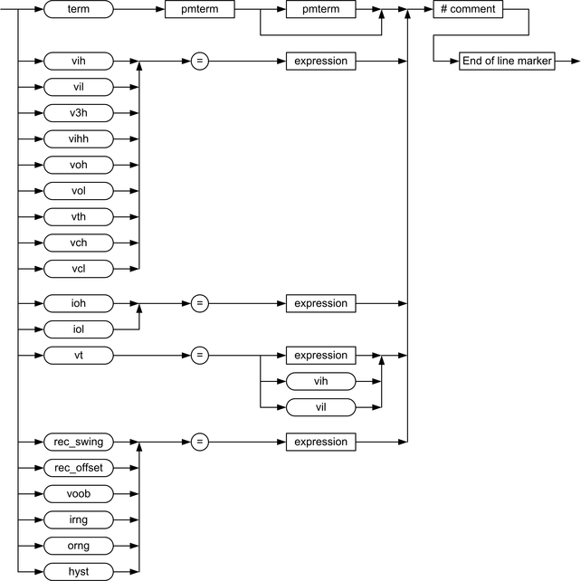

IO PINS resources
Resource parameters grouped by function
Resource parameter table
| Resource parameter | Description | ||||||||
|---|---|---|---|---|---|---|---|---|---|
| hyst |
Sets the hysteresis of the comparator in percent of the receive / threshold range. This optional resource value is currently not supported. |
||||||||
| ioh | Load current for high active load. The expression must define a value in milliampere (mA). |
||||||||
| iol | Load current for low active load. The expression must define a value in milliamps (mA). |
||||||||
| irng |
Defines the drive range. The expression must define a value in volts (V). The drive range is automatically set to the best fit value if it is not defined by resource value irng. This optional resource value is currently not supported. |
||||||||
| orng |
Defines the receive / threshold range. The expression must define a value in volts (V) or in milliampere (mA). The drive range is automatically set to the best fit value if it is not defined by resource value orng. This optional resource value is currently not supported. |
||||||||
| rec_offset | The receiver offset for a differential comparator. The value of "rec_offset" is typically about the crossover point of positive and negative connection signals of a differential comparator. The expression must define a value in volts (V). |
||||||||
| rec_swing | The receiver swing for a differential comparator. The rec_swing and rec_offset parameters are required to optimize the accuracy of a differential comparator. The value of "rec_swing" is the expected amplitude of the swing of the differential signal at the comparator (receiver). The expression must define a value in volts (V). |
||||||||
| term | Defines the termination mode. The following term(s) must define a valid termination mode.
Refer to TERM, TERM? - (TERMination mode) for a complete definition of the available termination modes. Note: term is an optional resource value but must always be defined as first value if it is used.
|
||||||||
| v3h | Input (drive) third level definition (high level voltage shift)
for I and I/O pins. The expression must define a value in volts (V). |
||||||||
| vch | Clamp high voltage definition. The expression must define a value in volts (V). |
||||||||
| vcl | Clamp low voltage definition. The expression must define a value in volts (V). |
||||||||
| vih | Input (drive) high voltage definition for I and I/O pins. The expression must define a value in volts (V). |
||||||||
| vihh | High voltage level definition for I and I/O pins. The expression must define a value in volts (V). |
||||||||
| vil | Input (drive) low voltage definition for I and I/O pins. The expression must define a value in volts (V). |
||||||||
| voh | Output threshold high voltage definition for O and I/O
pins. The expression must define a value in volts (V). |
||||||||
| vol | Output threshold low voltage definition for O and I/O pins. The expression must define a value in volts (V). |
||||||||
| vt | Termination or commutation voltage definition. The expression must define a value in volts (V). For I and I/O pins only, vih may be used to set vt to the high termination voltage and vil may be used to set vt to the low termination voltage. To avoid confusion with the vih and vil tokens, the expression must not be "vih" nor "vil". |
||||||||
| vth | Output threshold for FAST comparator (single threshold as opposed
to high and low). The expression must define a value in volts (V). |
If any I/O pins are not listed within an equation set, a warning is issued and the default setting is used.
Flow diagram

Functional changes
- Introduced before SmarTest 6.3.2
- SmarTest 7.4.0: New resources irng, orng, and hyst added.